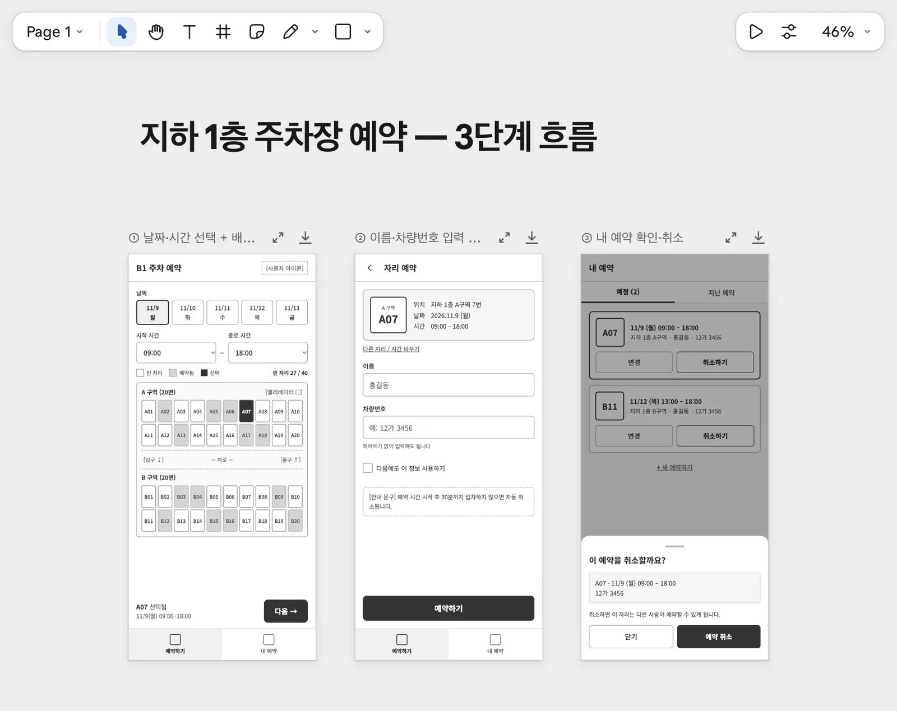
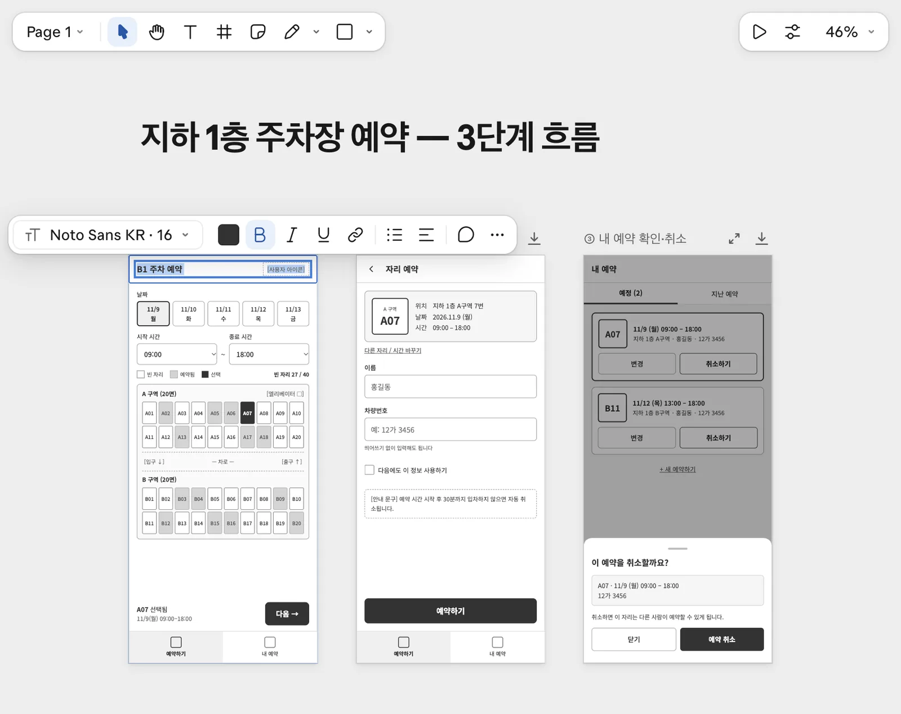
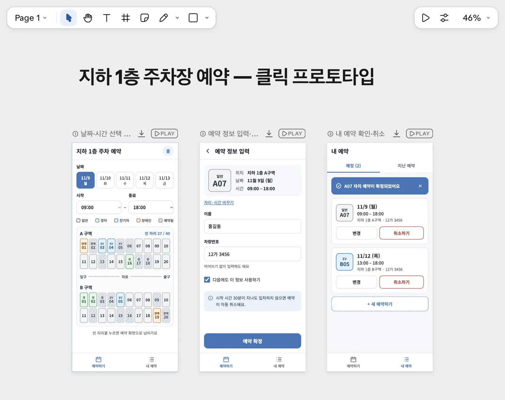
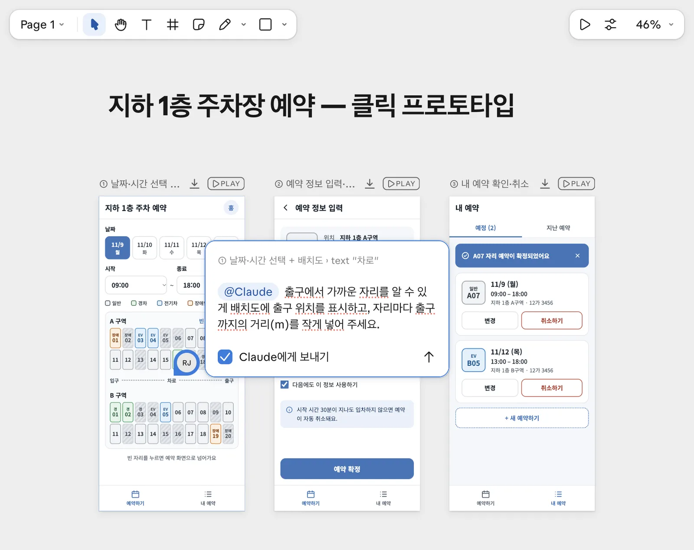
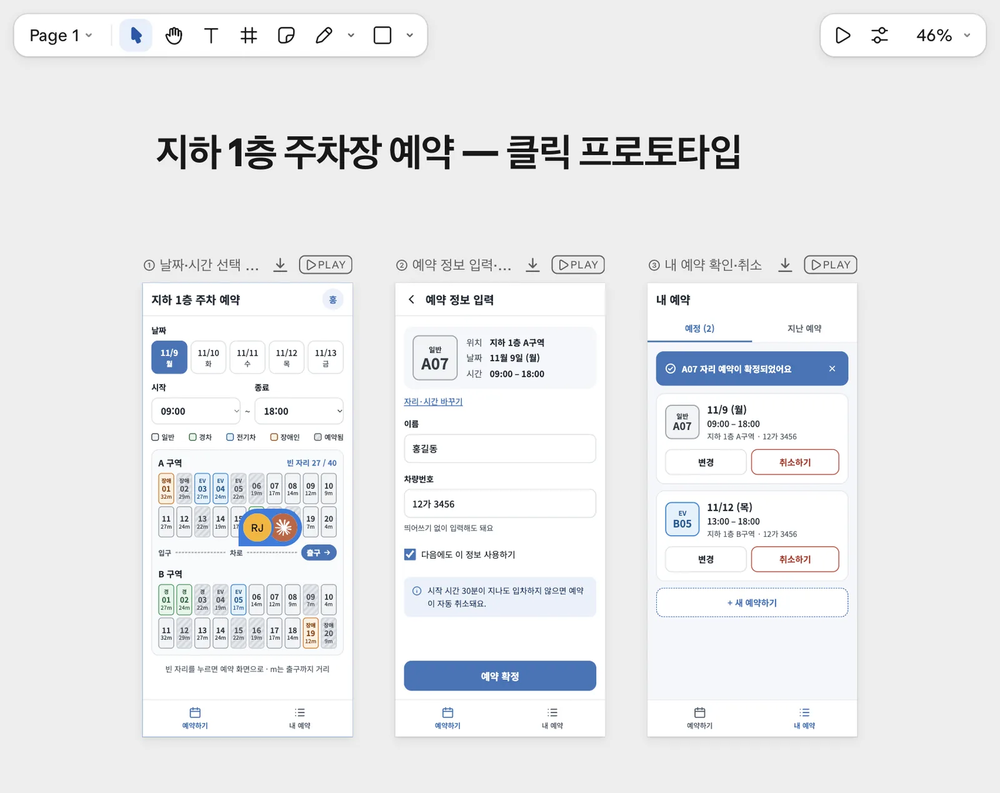
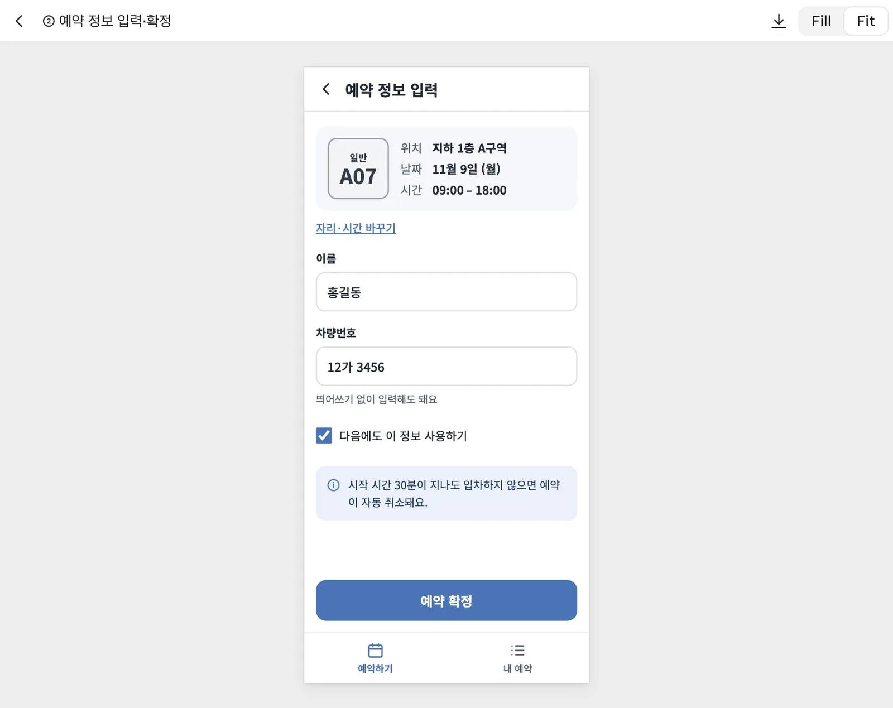
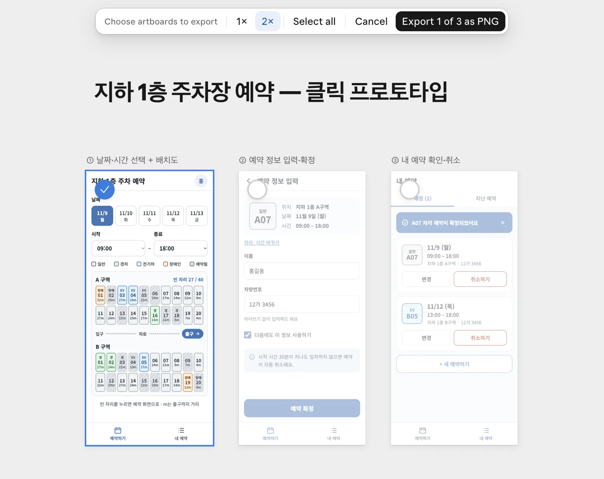

사내 지하 1층 주차장 예약 앱의 모바일 화면 3장을 만들고, 직접 편집과 댓글로 시안을 다듬습니다. 재생으로 화면 연결의 한계를 확인한 뒤 PNG와 HTML을 내보냅니다.
무엇을 · 왜#
이 장에서는 예약 화면의 구조와 이동 순서를 정합니다. 첫 화면에서 날짜·시간과 자리를 고르고, 다음 화면에서 예약 정보를 입력한 뒤 내 예약을 확인합니다. 아직 예약을 저장하는 앱을 만드는 단계는 아닙니다.
색과 사진을 뺀 와이어프레임부터 시작하면 화면마다 어떤 정보와 단추가 필요한지 살펴보기 쉽습니다. 사람이 제목을 직접 고친 뒤 AI에 색과 클릭 연결을 요청하고, 위치를 지정한 댓글로 배치도를 수정합니다.
따라 하기#
1. 디자인 캔버스 열기#
claude.ai의 아티팩트 → 새로운 무언가 만들기 → 디자인으로 들어갑니다. 녹화에서는 빈 캔버스와 채팅이 함께 열렸습니다. 왼쪽에는 「아이디어를 설명하고 디자인으로 만들기」, 오른쪽에는 아직 아트보드가 없다는 안내가 보입니다.
확인할 것: 일반 앱 결과 창이 아니라 아트보드를 직접 편집하는 캔버스가 열렸는지 봅니다.
2. P1 · 회색조 와이어프레임#
아래 요청을 입력합니다.
사내 지하 1층 주차장 예약 앱의 와이어프레임을 그려 줘. 모바일 화면 3개를 다음 흐름으로 구성해 줘: ① 날짜와 시간을 고르고 배치도(A·B 구역 20면씩)에서 빈 자리 보기 ② 자리를 눌러 이름과 차량번호를 입력하고 예약하기 ③ 내 예약 확인하고 취소하기. 색과 사진 없이 상자와 이름표만 써서 회색조의 간단한 와이어프레임으로 그려 줘.
1분 45초 뒤 390×844 크기의 아트보드 3장이 나왔습니다. 날짜·시간과 배치도, 이름·차량번호 입력, 내 예약과 취소 확인으로 이어지는 구성입니다.

| 화면 | 살펴볼 내용 |
|---|---|
| ① 날짜·시간과 배치도 | A·B 구역 20면씩, 빈 자리와 예약된 자리의 구분 |
| ② 예약 정보 | 고른 자리, 이름과 차량번호, 예약 확정 |
| ③ 내 예약 | 예약 내용과 취소 흐름 |
Claude는 날짜를 11/9~11/13으로, 예약된 자리를 13면으로 가정했습니다. 그래서 빈 자리는 27/40으로 표시됩니다. 「시작 30분 후 자동 취소」도 예시라고 밝히며 규칙이 다르면 알려 달라고 했습니다. 이 문구가 나왔다고 자동 취소 기능까지 만들어진 것은 아닙니다.
확인할 것: 세 화면의 역할을 보고, Claude가 임의로 넣은 날짜·예약 수·운영 규칙을 구분합니다. 걸린 시간: 약 1분 45초.
3. 제목을 직접 고치기#
제목 요소를 두 번 눌러 속성 막대를 엽니다. 녹화 화면에는 Noto Sans KR과 크기 16, 굵게·기울임·정렬·댓글 등의 항목이 보였습니다. 이 상태는 요소의 속성을 보는 상태입니다. 한 번 더 두 번 눌러 글자 편집으로 들어갑니다.
「B1」을 지우고 「지하 1층」을 입력합니다. 작은 문구 수정은 새 요청을 보내지 않고 같은 캔버스에서 직접 처리할 수 있습니다.

확인할 것: 제목이 「지하 1층 주차 예약」으로 바뀌었는지 봅니다. 다음 요청 뒤에도 이 제목이 유지되는지 확인하세요.
4. P2 · 시안과 클릭 연결#
이어서 회사 색과 자리 유형별 색을 지정하고 클릭 프로토타입을 요청합니다.
이 와이어프레임을 시안으로 발전시켜 줘. 회사 색은 #3C75BA로 쓰고, 자리 유형은 색으로 구분해 줘(일반 회색, 경차 초록, 전기차 파랑, 장애인 주황). 글씨는 크게 해 줘. 그리고 화면을 연결해서 ①에서 빈 자리를 누르면 ②로, ②에서 '예약 확정'을 누르면 ③으로 넘어가는 클릭 프로토타입으로 만들어 줘.
3분 26초 뒤 컬러 시안이 나왔습니다. 회사 색은 #3C75BA이고, 유형별 색에 더해 자리 안에 경·EV·장애 글자도 들어갔습니다. 색을 구별하기 어려운 사람도 유형을 읽을 수 있도록 한 구성입니다. 글씨 크기는 15~18px로 적용했습니다.

Claude는 직접 바꾼 제목을 유지했다고 설명했습니다. 동시에 ②·③은 어느 자리를 눌러도 A07 예시이고 날짜 버튼은 바뀌지 않는다고 밝혔습니다. 「제가 화면을 띄워 동작을 확인하지는 않았습니다.」라는 설명도 남겼습니다.
확인할 것: 색과 글자 표시, 제목 유지, 아트보드의 PLAY를 봅니다. 완료 설명의 한계도 읽으세요. 걸린 시간: 3분 26초.
5. P3 · 댓글로 출구와 거리 추가#
말풍선 단추로 댓글 모드를 켜고 배치도의 「차로」를 누릅니다. 해당 위치에 핀이 놓이고 @Claude가 들어간 입력창이 열립니다. 「Claude에게 보내기」가 켜져 있는지 확인하세요. 아래 내용을 댓글로 보냅니다.
출구에서 가까운 자리를 알 수 있게 배치도에 출구 위치를 표시하고, 자리마다 출구까지의 거리(m)를 작게 넣어 주세요.

1분 15초 뒤 회사 색의 출구 라벨과 화살표, 자리별 거리(m)가 추가됐습니다. 핀을 다시 누르면 요청 아래에 Claude의 답이 보입니다. 답에는 거리가 가정한 값이라고 적혀 있습니다.

스레드를 읽고 ✓ 표시로 해결 처리한 뒤 댓글 모드를 끕니다. 댓글을 해결하는 것은 요청과 반영 내용을 확인했다는 뜻입니다. 가정한 거리를 실제 측정값으로 받아들이지 마세요. 동작하는 MVP에서는 자리 정보 CSV를 함께 전달합니다.
확인할 것: 출구와 거리 표시가 생겼는지, 답변에 어떤 가정이 남아 있는지 봅니다. 걸린 시간: 1분 15초.
6. 재생 · A20을 누르면 무엇이 이어지나요?#
아트보드 위의 PLAY → Play full screen으로 재생합니다. Play on canvas도 선택할 수 있습니다. 첫 화면에서 출구까지 4m로 표시된 A20을 눌러 봅니다.
다음 예약 정보 화면으로 이동하지만 자리는 A07로 나옵니다. 「예약 확정」을 누르면 세 번째 내 예약 화면으로 이어집니다. 화면 사이의 이동은 만들었지만 선택한 자리 정보는 전달되지 않은 것입니다. 날짜 버튼도 바뀌지 않습니다.

| 재생으로 확인한 것 | 아직 확인할 수 없는 것 |
|---|---|
| 빈 자리를 누르면 예약 정보로 이동 | 고른 자리와 날짜·시간을 기억하는 동작 |
| 예약 확정에서 내 예약으로 이동 | 예약 저장과 다른 사람의 예약 반영 |
| 화면의 문구·단추·배치 | 동시 예약을 막는 규칙 |
확인할 것: 화면 이동과 데이터 전달을 나누어 봅니다.
7. PNG와 HTML 내보내기#
공유 → 내보내기 → PNG로 이동합니다. 아트보드 고르기 막대에서 배율을 정하고 Select all을 누른 뒤 Export 3 PNGs (.zip)으로 받습니다. 녹화에서는 780×1688 PNG 3장을 내보냈습니다.

압축을 풀고 파일 이름을 다음과 같이 준비합니다. HTML도 내보내 design.html로 저장합니다.
design-1.png
design-2.png
design-3.png
design.html
HTML은 아트보드를 묶은 단일 파일로 내려받았습니다. 내보낸 뒤 Noto Sans KR 글꼴은 라이선스 때문에 파일에 포함되지 않았으며 온라인일 때만 해당 글꼴을 유지한다는 알림도 나왔습니다. 파일을 다른 환경에서 볼 때는 글꼴 표시를 확인하세요.
확인할 것: PNG 3장과 HTML을 확보했는지 봅니다. 디자인 단계 전체 녹화는 약 20분입니다.
확인 문제#
PLAY로 세 화면이 이어지면 예약 앱이 완성된 것인가요?
이번 결과는 화면 연결을 확인하는 프로토타입입니다. A20을 골라도 A07이 나오는 한계가 남았습니다. 다음 동작하는 MVP에서는 PNG와 주차면.csv를 전달해 선택한 정보가 예약 화면과 저장 결과까지 이어지는지 확인합니다.